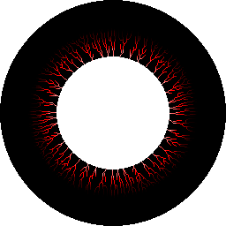
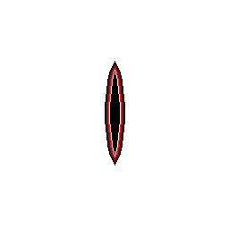

Observe. Descubra. Sobreviva.
Um jogo de plataformas 2D onde o que vês determina o que existe. A matéria negra desaparece quando não é observada — e algo lá dentro está a observar de volta.


O que o jogador vê no ecrã determina o que existe fisicamente. A matéria negra desaparece quando sai do campo de visão.
Absorve toda a luz, não emite som, e esconde criaturas no seu interior. Sólida quando observada, inexistente quando ignorada.
Bola de luz roxa e pegajosa. Ilumina a matéria negra, revela criaturas ocultas e activa mecanismos.
Deixa uma sombra no ar e teletransporta de volta a ela, conservando o momentum do ponto de origem.